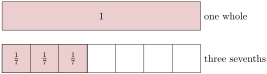
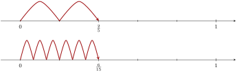
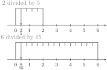
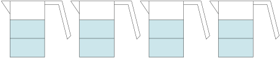
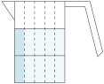

The word “fraction” comes from the Latin word fractio, which means “break into pieces”. For thousands of years, cultures from all over the world have used fractions to understand parts of a whole.
FigureA.2.1.Alternative Video Lesson
SubsectionA.2.1Visualizing Fractions
Parts of a Whole.
One approach to understanding fractions is to think of them as parts of a whole.
In Figure 2, we see \(1\) whole divided into \(7\) parts. Since \(3\) parts are shaded, we have an illustration of the fraction \(\frac{3}{7}\text{.}\) The denominator \(7\) tells us how many parts to cut up the whole; since we have \(7\) parts, they’re called “sevenths”. The numerator \(3\) tells us how many sevenths to consider.

FigureA.2.2.Representing \(\frac{3}{7}\) as parts of a whole.
CheckpointA.2.3.A Fraction as Parts of a Whole.
To visualize the fraction \(\frac{14}{35}\text{,}\) you might cut a rectangle into equal parts, and then count up of them.
Explanation.
You could cut a rectangle into \(35\) equal pieces, and then \(14\) of them would represent \(\frac{14}{35}\text{.}\)
We can also locate fractions on number lines. When ticks are equally spread apart, as in Figure 4, each tick represents a fraction.
FigureA.2.4.Representing \(\frac{3}{7}\) on a number line.
CheckpointA.2.5.A Fraction on a Number Line.
In the given number line, what fraction is marked?
Explanation.
There are \(8\) subdivisions between \(0\) and \(1\text{,}\) and the mark is at the fifth subdivision. So the mark is \(\frac{5}{8}\) of the way from \(0\) to \(1\) and therefore represents the fraction \(\frac{5}{8}\text{.}\)
Division.
Fractions can also be understood through division.
For example, we can view the fraction \(\frac{3}{7}\) as \(3\) divided into \(7\) equal parts, as in Figure 6. Just one of those parts represents \(\frac{3}{7}\text{.}\)
FigureA.2.6.Representing \(\frac{3}{7}\) on a number line.
CheckpointA.2.7.Seeing a Fraction as Division Arithmetic.
The fraction \(\frac{21}{40}\) can be thought of as dividing the whole number into equal-sized parts.
Explanation.
Since \(\frac{21}{40}\) means the same as \(21\div40\text{,}\) it can be thought of as dividing \(21\) into \(40\) equal parts.
SubsectionA.2.2Equivalent Fractions
It’s common to have two fractions that represent the same amount. Consider \(\frac{2}{5}\) and \(\frac{6}{15}\) represented in various ways in Figures 8–Figure 10.
FigureA.2.8.\(\frac{2}{5}\) and \(\frac{6}{15}\) as equal parts of a whole

FigureA.2.9.\(\frac{2}{5}\) and \(\frac{6}{15}\) as equal on a number line

FigureA.2.10.\(\frac{2}{5}\) and \(\frac{6}{15}\) as equal quotients
Those two fractions, \(\frac{2}{5}\) and \(\frac{6}{15}\) are equal, as those figures demonstrate. In addition, both fractions are equal to \(0.4\) as a decimal. If we must work with this number, the fraction that uses smaller numbers, \(\frac{2}{5}\text{,}\) is preferable. Working with smaller numbers decreases the likelihood of making a human arithmetic error and it also increases the chances that you might make useful observations about the nature of that number.
So if you are handed a fraction like \(\frac{6}{15}\text{,}\) it is important to try to reduce it to “lowest terms”. The most important skill you can have to help you do this is to know the multiplication table well. If you know it well, you know that \(6=2\cdot3\) and \(15=3\cdot5\text{,}\) so you can break down the numerator and denominator that way. Both the numerator and denominator are divisible by \(3\text{,}\) so they can be “factored out” and then as factors, cancel out.
With \(\frac{14}{42}\text{,}\) we have \(\frac{2\cdot7}{2\cdot3\cdot7}\text{,}\) which reduces to \(\frac{1}{3}\text{.}\)
(b)
\(\dfrac{8}{30}=\)
Explanation.
With \(\frac{8}{30}\text{,}\) we have \(\frac{2\cdot2\cdot2}{2\cdot3\cdot5}\text{,}\) which reduces to \(\frac{4}{15}\text{.}\)
(c)
\(\dfrac{70}{90}=\)
Explanation.
With \(\frac{70}{90}\text{,}\) we have \(\frac{7\cdot10}{9\cdot10}\text{,}\) which reduces to \(\frac{7}{9}\text{.}\)
Sometimes it is useful to do the opposite of reducing a fraction, and build up the fraction to use larger numbers.
CheckpointA.2.12.Building Up a Fraction.
Sayid scored \(\frac{21}{25}\) on a recent exam. Build up this fraction so that the denominator is \(100\text{,}\) so that Sayid can understand what percent score he earned.
Explanation.
To change the denominator from \(25\) to \(100\text{,}\) it needs to be multiplied by \(4\text{.}\) So we calculate
So the fraction \(\frac{21}{25}\) is equivalent to \(\frac{84}{100}\text{.}\) (This means Sayid scored an \(84\%\text{.}\))
SubsectionA.2.3Multiplying with Fractions
ExampleA.2.13.
Suppose a recipe calls for \(\frac{2}{3}\) cup of milk, but we’d like to quadruple the recipe (make it four times as big). We’ll need four times as much milk, and one way to measure this out is to fill a measuring cup to \(\frac{2}{3}\) full, four times:

When you count up the shaded thirds, there are eight of them. So multiplying \(\frac{2}{3}\) by the whole number \(4\text{,}\) the result is \(\frac{8}{3}\text{.}\) Mathematically:
FactA.2.14.Multiplying a Fraction and a Whole Number.
When you multiply a whole number by a fraction, you may just multiply the whole number by the numerator and leave the denominator alone. In other words, as long as \(d\) is not \(0\text{,}\) then a whole number and a fraction multiply this way:
\begin{equation*}
a \cdot \frac{c}{d} = \frac{a\cdot c}{d}
\end{equation*}
ExampleA.2.15.
We could also use multiplication to decrease amounts. Suppose we needed to cut the recipe down to just one fifth. Instead of four of the \(\frac{2}{3}\) cup milk, we need one fifth of the \(\frac{2}{3}\) cup milk. So instead of multiplying by \(4\text{,}\) we multiply by \(\frac{1}{5}\text{.}\) But how much is \(\frac{1}{5}\) of \(\frac{2}{3}\) cup?
If we cut the measuring cup into five equal vertical strips along with the three equal horizontal strips, then in total there are \(3\cdot5=15\) subdivisions of the cup. Two of those sections represent \(\frac{1}{5}\) of the \(\frac{2}{3}\) cup.

In the end, we have \(\frac{2}{15}\) of a cup. The denominator \(15\) came from multiplying \(5\) and \(3\text{,}\) the denominators of the fractions we had to multiply. The numerator \(2\) came from multiplying \(1\) and \(2\text{,}\) the numerators of the fractions we had to multiply.
Multiplying numerators gives \(10\text{,}\) and multiplying denominators gives \(21\text{.}\) The answer is \(\frac{10}{21}\text{.}\)
(b)
\(\dfrac{12}{3}\cdot\dfrac{15}{3}=\)
Explanation.
Before we multiply fractions, note that \(\frac{12}{3}\) reduces to \(4\text{,}\) and \(\frac{15}{3}\) reduces to \(5\text{.}\) So we just have \(4\cdot5=20\text{.}\)
(c)
\(-\dfrac{14}{5}\cdot\dfrac{2}{3}=\)
Explanation.
Multiplying numerators gives \(28\text{,}\) and multiplying denominators gives \(15\text{.}\) The result should be negative, so the answer is \(-\frac{28}{15}\text{.}\)
(d)
\(\dfrac{70}{27}\cdot\dfrac{12}{-20}=\)
Explanation.
Before we multiply fractions, note that \(\frac{12}{-20}\) reduces to \(\frac{-3}{5}\text{.}\) So we have \(\frac{70}{27}\cdot\frac{-3}{5}\text{.}\) Both the numerator of the first fraction and denominator of the second fraction are divisible by \(5\text{,}\) so it helps to reduce both fractions accordingly and get \(\frac{14}{27}\cdot\frac{-3}{1}\text{.}\) Both the denominator of the first fraction and numerator of the second fraction are divisible by \(3\text{,}\) so it helps to reduce both fractions accordingly and get \(\frac{14}{9}\cdot\frac{-1}{1}\text{.}\) Now we are just multiplying \(\frac{14}{9}\) by \(-1\text{,}\) so the result is \(\frac{-14}{9}\text{.}\)
SubsectionA.2.4Division with Fractions
How does division with fractions work? Are we able to compute/simplify each of these examples?
We know that when we divide something by \(2\text{,}\) this is the same as multiplying it by \(\frac{1}{2}\text{.}\) Conversely, dividing a number or expression by \(\frac{1}{2}\) is the same as multiplying by \(\frac{2}{1}\text{,}\) or just \(2\text{.}\) The more general property is that when we divide a number or expression by \(\frac{a}{b}\text{,}\) this is equivalent to multiplying by the reciprocal \(\frac{b}{a}\text{.}\)
FactA.2.18.Division with Fractions.
As long as \(b\text{,}\)\(c\) and \(d\) are not \(0\text{,}\) then division with fractions works this way:
With whole numbers and integers, operations of addition and subtraction are relatively straightforward. The situation is almost as straightforward with fractions if the two fractions have the same denominator. Consider
If it’s possible, useful, or required of you, simplify the result by reducing to lowest terms.
CheckpointA.2.22.Fraction Addition and Subtraction.
Add or subtract these fractions.
(a)
\(\frac{1}{3}+\frac{10}{3}=\)
Explanation.
Since the denominators are both \(3\text{,}\) we can add the numerators: \(1+10=11\text{.}\) The answer is \(\frac{11}{3}\text{.}\)
(b)
\(\frac{13}{6}-\frac{5}{6}=\)
Explanation.
Since the denominators are both \(6\text{,}\) we can subtract the numerators: \(13-5=8\text{.}\) The answer is \(\frac{8}{6}\text{,}\) but that reduces to \(\frac{4}{3}\text{.}\)
Whenever we’d like to combine fractional amounts that don’t represent the same number of parts of a whole (that is, when the denominators are different), finding sums and differences is more complicated.
ExampleA.2.23.Quarters and Dimes.
Find the sum \(\frac{3}{4}+\frac{2}{10}\text{.}\) Does this seem intimidating? Consider this:
\(\frac{1}{4}\) of a dollar is a quarter, and so \(\frac{3}{4}\) of a dollar is \(75\) cents.
\(\frac{1}{10}\) of a dollar is a dime, and so \(\frac{2}{10}\) of a dollar is \(20\) cents.
So if you know what to look for, the expression \(\frac{3}{4}+\frac{2}{10}\) is like adding \(75\) cents and \(20\) cents, which gives you \(95\) cents. As a fraction of one dollar, that is \(\frac{95}{100}\text{.}\) So we can report
(Although we should probably reduce that last fraction to \(\frac{19}{20}\text{.}\))
This example was not something you can apply to other fraction addition situations, because the denominators here worked especially well with money amounts. But there is something we can learn here. The fraction \(\frac{3}{4}\) was equivalent to \(\frac{75}{100}\text{,}\) and the other fraction \(\frac{2}{10}\) was equivalent to \(\frac{20}{100}\text{.}\) These equivalent fractions have the same denominator and are therefore “easy” to add. What we saw happen was:
This realization gives us a strategy for adding (or subtracting) fractions.
FactA.2.24.Adding/Subtracting Fractions with Different Denominators.
To add (or subtract) generic fractions together, use their denominators to find a common denominator. This means some whole number that is a whole multiple of both of the original denominators. Then rewrite the two fractions as equivalent fractions that use this common denominator. Write the result keeping that denominator and adding (or subtracting) the numerators. Reduce the fraction if that is useful or required.
Among all possible common denominators for two fractions, one option will be smaller than all others. This is called the least common denominator.
ExampleA.2.25.
Let’s add \(\frac{2}{3}+\frac{2}{5}\text{.}\) The denominators are \(3\) and \(5\text{,}\) so the number \(15\) would be a good common denominator.
A chef had \(\frac{2}{3}\) cups of flour and needed to use \(\frac{1}{8}\) cup to thicken a sauce. How much flour is left?
Explanation.
We need to compute \(\frac{2}{3} - \frac{1}{8}\text{.}\) The denominators are \(3\) and \(8\text{.}\) One common denominator is \(24\text{,}\) so we move to rewrite each fraction using \(24\) as the denominator:
The numerical result is \(\frac{13}{24}\text{,}\) but a pure number does not answer this question. The amount of flour remaining is \(\frac{13}{24}\)cups.
SubsectionA.2.6Mixed Numbers and Improper Fractions
A simple recipe for bread contains only a few ingredients:
\(1\,\sfrac{1}{2}\)
tablespoons yeast
\(1\,\sfrac{1}{2}\)
tablespoons kosher salt
\(6\,\sfrac{1}{2}\)
cups unbleached, all-purpose flour (more for dusting)
Each ingredient is listed as a mixed number that quickly communicates how many whole amounts and how many parts are needed. It’s useful for quickly communicating a practical amount of something you are cooking with, measuring on a ruler, purchasing at the grocery store, etc. But it causes trouble in an algebra class. The number \(1\,\sfrac{1}{2}\) means “one and one half”. So really,
The trouble is that with \(1\,\sfrac{1}{2}\text{,}\) you have two numbers written right next to each other. Normally with two math expressions written right next to each other, they should be multiplied, not added. But with a mixed number, they should be added.
Fortunately we just reviewed how to add fractions. If we need to do any arithmetic with a mixed number like \(1\,\sfrac{1}{2}\text{,}\) we can treat it as \(1+\frac{1}{2}\) and simplify to get a “nice” fraction instead: \(\frac{3}{2}\text{.}\) A fraction like \(\frac{3}{2}\) is called an improper fraction because it’s actually larger than \(1\text{.}\) And a “proper” fraction would be something small that is only part of a whole instead of more than a whole.

![one rectangle that is five times as wide as it is tall; the entire rectangle is shaded; there is a 1 in the center of the rectangle; a second rectangle that is also five times as wide as it is tall; it is subdivided equally into five squares; the first two squares are shaded; there is a 1/5 in the center of each of the first two squares; a third rectangle that is also five times as wide as it is tall; it is subdivided equally into fifteen adjacent rectangles; the first six of these smaller rectangles are shaded; there is a 1/15 in the center of each of the first six smaller rectangles](generated/latex-image/equivalent-fractions-parts.svg)